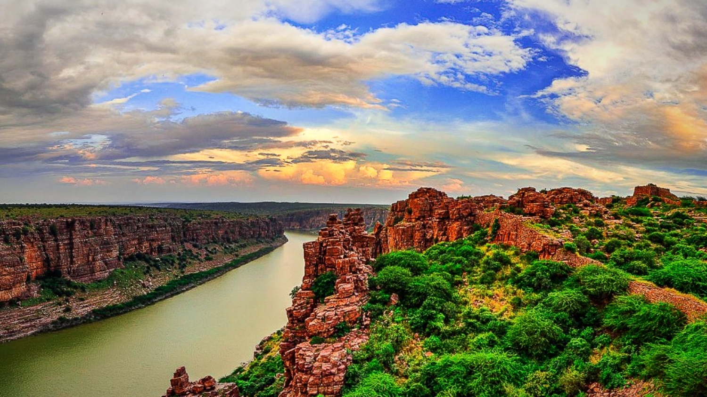

GOA
Goa is a state in western India with coastlines stretching along the Arabian Sea. Its long history as a
Portuguese colony prior to 1961
is evident in its preserved 17th-century churches and the area’s tropical spice
plantations..
is evident in its preserved 17th-century churches and the area’s tropical spice plantations..

Gandikota is a village and historical fort on the right bank of the Penna river, 15 km from Jammalamadugu
in Kadapa district,
GANDIKOTA
Gandikota is a village and historical fort on the right bank of the Penna river, 15 km from Jammalamadugu
in Kadapa district,
Andhra Pradesh, India. The fort was the center of power for various dynasties, such as the Kalyani Chalukyas,
Pemmasani Nayakas, and the Golconda Sultanate..

THE-GATEWAY-OF-INDIA
The Gateway of India is an arch-monument built in the early twentieth century in the city of Mumbai,
in
the Indian state of Maharashtra. It was erected to commemorate the landing in December 1911 at
Shyamaprasad Mukherjee Chowk, Mumbai of King George V and Queen Mary,
the first British monarch to visit India. ..

TIRUPATHI
TIRUPATI: In a blatant violation of rules and regulations and leading to contempt of court orders,
the government has for the first time in the history of TTD ordered release of Rs 5-crore for purchase
of four acres of land for
a private temple Sri Nookambika Ammavari Devastanam located at Anakapalli town in Visakhapatnam district

LAKNAVARAM
Laknavaram Lake is a lake located in Govindaraopet mandal, about 80km from Warangal, Telangana.
TAJ-MAHAL
Taj Mahal is the most amazing Mughal architecture
and is a famous tourist destination in the world.
The place which has been declared as
a world heritage site by UNESCO in 1983 is one of the most admired architectures of India’s
heritage...

LOTUS-TEMPLE
The Lotus Temple, located in Delhi,
India, is a Baháʼà House of Worship that was dedicated in December
1986.
[1] Notable for its flowerlike shape, it has become a prominent attraction in the city..
MANALI
Manali is located at an altitude of 1829 Mtrs which is one of the popular hill
station of Himalayan range in Himachal Pradesh. Experiencing the view of hill
stations surrounding Manali is a marvelous experience.


MYSORE-PALACE
The sprawling city of Mysore is a delight to explore thanks to its eclectic mix of fine old colonial architecture;
regal Indian palaces; and lush, well-manicured gardens..

ARAKU-VALLEY
City in Andhra Pradesh
Araku Valley is a hill station and valley region in the southeastern
Indian state of Andhra Pradesh.
It's surrounded by the thick forests of the Eastern Ghats mountain range.

PAPIKONDALU
Papikondalu mountain range runs along the River Godavari (Western Godavari) and is located in Rajahmundry,
Andhra Pradesh.
Papikondalu is a sheer fest to the eyes in terms of its scenic beauty. .
MALLELA-THEERTHAM
Nestled in the state of Telangana, Mallela Theertham is a hidden gem untouched by industrialization and bountiful in scenic beauty.
Falling from a height of about 150 feet, this waterfall is quite a sight to see.

BADRINATH
Town in Uttarakhand
Badrinath is a holy town and a nagar panchayat in Chamoli district in the state of Uttarakhand, India.
It is one of the four sites in India's Char Dham pilgrimage and gets its name from the Badrinath Temple.

RED-FORT
The Red Fort is a historic fort in the city of Delhi in India that served as the main residence of the Mughal Emperors.
Emperor Shah Jahan commissioned construction of the Red Fort on 12 May 1638, when he decided to shift his capital from Agra to Delhi.
LADAKH
Leh Ladakh Tourism
Stunning Gompas (Tibetan Buddhist monasteries), fluttering prayer flags, whitewashed stupas,
Ladakh is a riot of intricate murals
and red-robed
Dominated by dramatic landscapes, Ladakh is known as the world's coldest desert..
GOLDEN-TEMPLE
The Golden Temple, also known as Harmandir Sahib, meaning "abode of God" or Darbār Sahib, meaning "exalted court"
is a gurdwara
located in the city of Amritsar, Punjab, India. It is the preeminent spiritual site of Sikhism.

MUNNAR
Munnar Tourism
Munnar is a popular hill-station of Kerala perched at an altitude of 1600 metres in the Western Ghats. Famous for its
tea estates,
various shades of green, blankets of mist and craggy peaks, Munnar is aptly known as the 'Kashmir of South India'.
SRISAILAM
Srisailam, a hill town in Kurnool district of Andhra Pradesh is home to the holy Malikarjuna Jyotirlinga
and also as one of the
eighteen Shakti Peethas of goddess Parvati.
MYSORE
Mysore (or Mysuru), a city in India's southwestern Karnataka state, was the capital of the Kingdom of Mysore from 1399 to 1947.
In its center is opulent Mysore Palace,..

OOTY
Ooty Tourism
Nestled amidst Nilgiri hills, Ooty, also known as Udagamandalam, is a hill station in Tamil Nadu
which serves as a top-rated tourist
destination.
Once regarded as the summer headquarters of
the East India Company, the Queen of the hills is a picturesque getaway...

AMER-FORT-JAIPUR
Amer Fort (often also spelt "Amber") was built as a fortified palace in 1592 by Maharaja Man Singh I and has long served as
the capital of Jaipur.
Carved high up into the hillside, the fort is accessible on foot via a steep climb or
by shuttle rides from the town below (better
still, let an elephant do the work)..

MAHABODHI-TEMPLE-BODHGAYA
Bodhgaya, considered the world's holiest Buddhist site, attracts thousands of visitors each year,
all drawn to participate
with the resident monks in meditation and prayer.

MEHRANGARH-FORT-JODHPUR
Dominating the old city of Jodhpur, the massive Mehrangarh Fort, one of the largest fortifications in India,
was built in
the 15th century to safeguard the people of the famous "Blue City,
as Jodhpur is still known - a name derived from its indigo colored
houses, painted blue to deflect the heat...